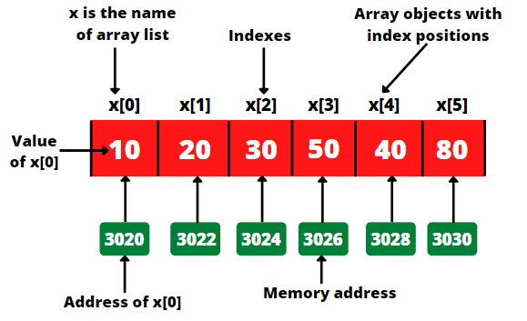
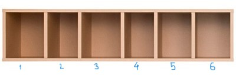
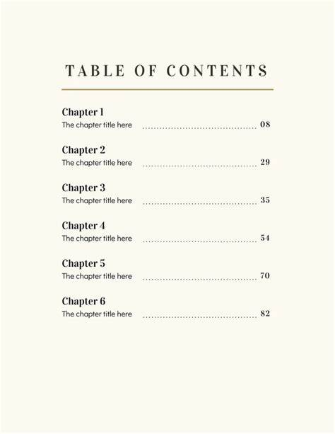

What is an Array
An array is a linear data structure that holds a collection of elements in a contiguous block of memory. Each element is accessed using an index, making it efficient for storing and retrieving data.

Understanding Arrays:
Arrays store elements of the same data type in a sequential manner, allowing easy access to any element using its index. This structure is widely used due to its simplicity and speed of access.
- Each element is identified by its index, starting from 0 up to (n-1) for an array of size n.
- Arrays have a fixed size once they are created (static arrays).
Example: An array can be visualized as a row of storage boxes, where each box can hold a value, and the box’s position indicates its index.
Working with Arrays
Arrays allow us to store multiple items of the same type in a single structure, which is particularly useful for managing large datasets efficiently.
- Array Structure:
Arrays are sequential and indexed, meaning each item is positioned next to the previous one in memory. This layout helps in direct access to any element. - Index Access:
Each element is accessible using its index, providing quick read and write operations, which are essential for many algorithms.
Real-World Examples of Arrays
Arrays are used in numerous applications where sequential data storage is required. Some examples include:
- Storing Scores: Arrays are used to store scores or marks in various exams.
- Image Pixels: Images are represented as multi-dimensional arrays where each pixel has specific values.
- Data Tables: In databases, rows of records can be represented as arrays for processing.
- Matrix Operations: Arrays are widely used in mathematical computations like matrices.
- Sensor Data: Continuous data collected from sensors is often stored in arrays.
Key Operations of an Array
- Access: The operation used to access an element at a specific index in the array. Array elements are accessed directly using their index, allowing for fast retrieval.
- Insert: The operation to add an element at a specific index in the array. For static arrays, insertion may require shifting elements to make space.
- Update: The operation that allows you to change the value of an element at a specified index.
- Delete: The operation to remove an element from a specific index in the array. After deletion, elements may need to be shifted to fill the empty space.
- Length: The operation that returns the total number of elements in the array.
A Real-World Example
- Access: Retrieve an element at a certain index.
Example: Looking up a specific page in a book by its page number.

- Insert: Add a new element at a specific position in an array.
Example: Adding a new contact at a specific position in a phone contact list.
- Update: Change the value of an element at a specific index.
Example: Updating an old phone number with a new one in the contact list.
- Delete: Remove an element at a specific index.
Example: Deleting an outdated contact from the list.
- Length: Find out how many elements are currently in the array.
Example: Checking the number of songs in a playlist.
Types of Arrays
Arrays come in various types, each serving different purposes depending on the requirements:
- Static Array (1D Array): An array with a fixed size that cannot be changed after initialization.
- Usage: Best when the number of elements is predetermined and unchanging.
- Drawbacks: May lead to memory waste if not all allocated space is utilized.
- Dynamic Array: An array that adjusts its size dynamically as elements are added, typically expanding by moving elements to a new, larger array when needed.
- Usage: Flexible and suitable when the number of elements is variable.
- Drawbacks: Requires extra memory and time during resizing, potentially impacting performance.
- Multi-dimensional Array: Arrays that consist of more than one dimension, like 2D or 3D arrays. They can represent matrices, grids, or data in multiple dimensions.
- Usage: Useful for applications like mathematical computations, graphics, and complex data representation.
- Drawbacks: Consumes more memory and can be more complex to navigate, especially as dimensions increase.
Comparison of Array Types: Static vs Dynamic vs Multi-dimensional
| Aspect | Static Array (1D Array) | Dynamic Array | Multi-dimensional Array |
|---|---|---|---|
| Memory Allocation | Fixed size, allocated at the start. | Flexible size, allocated as needed. | Fixed size per dimension, allocated in blocks. |
| Space Efficiency | Efficient if the size matches the exact need. | Can waste memory during resizing but adapts to needs. | Requires more memory, increasing with dimensions. |
| Resize Operations | No resizing, fixed once created. | Resizes by creating a new array and copying elements. | No resizing, fixed structure with multiple dimensions. |
| Access Time Complexity | O(1), as each element can be accessed by index. | O(1), each element is accessible by index. | O(1) for each element access, but multi-step indexing may slow access. |
| Insertion Time Complexity | O(n), if inserting in the middle (shift required). | Amortized O(1) for appending; O(n) if resizing required. | O(n) or more, depending on dimension size and location of insertion. |
| Deletion Time Complexity | O(n), due to shifting elements. | O(n), may involve shifting or resizing. | O(n) or more, depending on dimension size and location of deletion. |
| Memory Overhead | Minimal, as no extra space is needed beyond array size. | Higher, due to potential empty space and resizing. | High, as each additional dimension increases memory usage. |
| Implementation Simplicity | Simple, since no resizing or extra management needed. | More complex due to resizing and reallocation. | Complex, especially with multiple indices and dimension handling. |
| Cache Efficiency | High, as memory is contiguous. | High, but may vary due to reallocations. | Lower, as multidimensional layout may reduce cache performance. |
| Best Suited For | When data size is known and fixed. | When data size is unknown or frequently changes. | Applications needing multi-dimensional data, like matrices or grids. |
Array's Implementation
In C, arrays must be declared before use by specifying their name, type, and size. This allocates memory for the array. Let's look at how different types of arrays—static, multi-dimensional, and dynamic—are declared, initialized, and accessed in C.
Array Declaration Syntax
data_type array_name[size];This is the basic syntax for declaring an array in C. However, multi-dimensional arrays and dynamic arrays follow slightly different rules, which we will discuss below.
Array Types
| Aspect | Static Array | Multi-Dimensional Array | Dynamic Array |
|---|---|---|---|
| Declaration | data_type array_name[size]; |
data_type array_name[size1][size2]...[sizeN]; |
data_type *array_name;array_name = (data_type*) malloc(size * sizeof(data_type)); |
| Initialization | data_type array_name[size] = {value1, value2, ...}; |
data_type array_name[size1][size2] = {{val1, val2}, {val3, val4}}; |
for (int i = 0; i < size; i++) { array_name[i] = value; } |
| Accessing | array_name[index]; |
array_name[index1][index2]; |
array_name[index]; |
1. Static Array in C
A static array is one with a fixed size, which must be specified at the time of declaration. It is allocated memory at compile-time.
Example
// Static Array Example
#include <stdio.h>
int main() {
int arr_int[5]; // integer array
char arr_char[5]; // character array
return 0;
}Output:
There is no visible output as the array is just declared, but memory is allocated for the arrays.
2. Multi-Dimensional Arrays in C
Multi-dimensional arrays in C can be used to store data in more than one dimension, such as matrices. They are declared with multiple indices.
Example
// Multi-Dimensional Array Example
#include <stdio.h>
int main() {
int matrix[3][3] = {{1, 2, 3}, {4, 5, 6}, {7, 8, 9}};
printf("Element at matrix[1][1]: %d\n", matrix[1][1]); // Output: 5
return 0;
}Output:
Element at matrix[1][1]: 5
3. Dynamic Array in C
A dynamic array is an array whose size can be altered during runtime using dynamic memory allocation. This is useful when the number of elements is unknown at compile time.
Example
// Dynamic Array Example
#include <stdio.h>
#include <stdlib.h>
int main() {
int size = 5;
int *arr = (int*) malloc(size * sizeof(int));
for (int i = 0; i < size; i++) {
arr[i] = i * 10; // Initialize dynamic array
}
for (int i = 0; i < size; i++) {
printf("Element at arr[%d]: %d\n", i, arr[i]);
}
free(arr); // Free the allocated memory
return 0;
}Output:
Element at arr[0]: 0 Element at arr[1]: 10 Element at arr[2]: 20 Element at arr[3]: 30 Element at arr[4]: 40
Comparison Of Complexities
| Operation | Static Array | Multidimensional Array | Dynamic Array |
|---|---|---|---|
| Access by Index | O(1) | O(1) | O(1) |
| Insertion at End | O(n) | O(n * m) | O(1) (amortized) |
| Insertion at Position | O(n) | O(n * m) | O(n) |
| Deletion | O(n) | O(n * m) | O(n) |
| Space Complexity | O(n) | O(n * m) | O(n) |
Comparison of Array Types
Here is a quick comparison of the different types of arrays:
| Aspect | Static Array | Multi-Dimensional Array | Dynamic Array |
|---|---|---|---|
| Memory Allocation | Fixed size, allocated at compile-time. | Fixed size, allocated at compile-time. | Flexible size, allocated during runtime using malloc. |
| Size | Cannot change once declared. | Fixed number of rows and columns, defined at compile-time. | Size can be changed dynamically using memory allocation functions. |
| Usage | When the number of elements is known in advance. | For storing data in more than one dimension (e.g., matrices). | When the number of elements is not known and may change. |
| Memory Management | Automatically managed. | Automatically managed for each dimension. | Requires manual management (e.g., freeing memory with free()). |
Implementation of Static (1D Array) Array Operations
1. Array Declaration and Initialization
First, let's declare and initialize a simple array in C:
// C Program to declare and initialize an array
#include <stdio.h>
int main() {
int arr[5] = {1, 2, 3, 4, 5}; // Array initialization with values
// Printing the initialized array
for(int i = 0; i < 5; i++) {
printf("arr[%d] = %d\n", i, arr[i]);
}
return 0;
}
Output:
arr[0] = 1
arr[1] = 2
arr[2] = 3
arr[3] = 4
arr[4] = 5
2. Array Accessing
Accessing individual elements of the array by index:
// C Program to access array elements
#include <stdio.h>
int main() {
int arr[5] = {10, 20, 30, 40, 50};
// Accessing an element
printf("Element at arr[2]: %d\n", arr[2]); // Accessing the element at index 2
return 0;
}
Output:
Element at arr[2]: 30
3. Array Insertion (at a specific index)
Inserting an element at a specific position:
// C Program to insert an element at a specific index
#include <stdio.h>
int main() {
int arr[6] = {10, 20, 30, 40, 50}; // Initial array
int pos = 2, val = 25;
// Shifting elements to the right
for(int i = 4; i >= pos; i--) {
arr[i + 1] = arr[i];
}
arr[pos] = val; // Inserting the new value
// Printing the modified array
for(int i = 0; i < 6; i++) {
printf("arr[%d] = %d\n", i, arr[i]);
}
return 0;
}
Output:
arr[0] = 10
arr[1] = 20
arr[2] = 25
arr[3] = 30
arr[4] = 40
arr[5] = 50
4. Array Deletion (at a specific index)
Deleting an element at a specific position:
// C Program to delete an element at a specific index
#include <stdio.h>
int main() {
int arr[5] = {10, 20, 30, 40, 50};
int pos = 2; // Index to delete
// Shifting elements to the left
for(int i = pos; i < 4; i++) {
arr[i] = arr[i + 1];
}
// Printing the modified array
for(int i = 0; i < 4; i++) {
printf("arr[%d] = %d\n", i, arr[i]);
}
return 0;
}
Output:
arr[0] = 10
arr[1] = 20
arr[2] = 40
arr[3] = 50
5. Array Searching (Linear Search)
Performing a linear search to find an element:
// C Program to search an element in an array using linear search
#include <stdio.h>
int main() {
int arr[5] = {10, 20, 30, 40, 50};
int search = 30, found = 0;
// Linear search
for(int i = 0; i < 5; i++) {
if(arr[i] == search) {
printf("Element %d found at index %d\n", search, i);
found = 1;
break;
}
}
if(!found) {
printf("Element %d not found.\n", search);
}
return 0;
}
Output:
Element 30 found at index 2
6. Array Sorting (Bubble Sort)
Sorting the array using bubble sort algorithm:
// C Program to sort an array using bubble sort
#include <stdio.h>
int main() {
int arr[5] = {50, 40, 10, 30, 20};
int temp;
// Bubble Sort
for(int i = 0; i < 4; i++) {
for(int j = 0; j < 4 - i; j++) {
if(arr[j] > arr[j + 1]) {
temp = arr[j];
arr[j] = arr[j + 1];
arr[j + 1] = temp;
}
}
}
// Printing sorted array
for(int i = 0; i < 5; i++) {
printf("arr[%d] = %d\n", i, arr[i]);
}
return 0;
}
Output:
arr[0] = 10
arr[1] = 20
arr[2] = 30
arr[3] = 40
arr[4] = 50
Implementation of Multidimensional Array Operations
1. Multidimensional Array Declaration and Initialization
First, let's declare and initialize a 2D array in C:
// C Program to declare and initialize a multidimensional array
#include <stdio.h>
int main() {
int arr[2][3] = {
{1, 2, 3},
{4, 5, 6}
};
// Printing the initialized 2D array
for(int i = 0; i < 2; i++) {
for(int j = 0; j < 3; j++) {
printf("arr[%d][%d] = %d\n", i, j, arr[i][j]);
}
}
return 0;
}
Output:
arr[0][0] = 1
arr[0][1] = 2
arr[0][2] = 3
arr[1][0] = 4
arr[1][1] = 5
arr[1][2] = 6
2. Accessing Elements of a Multidimensional Array
Accessing specific elements using row and column indices:
// C Program to access an element of a 2D array
#include <stdio.h>
int main() {
int arr[2][3] = {
{10, 20, 30},
{40, 50, 60}
};
// Accessing an element
printf("Element at arr[1][2]: %d\n", arr[1][2]); // Accessing the element at row 1, column 2
return 0;
}
Output:
Element at arr[1][2]: 60
3. Insertion in a Multidimensional Array
Inserting a new element into a 2D array (modifying an existing element):
// C Program to modify a specific element in a 2D array
#include <stdio.h>
int main() {
int arr[2][3] = {
{10, 20, 30},
{40, 50, 60}
};
// Modifying the element at position [1][1]
arr[1][1] = 100;
// Printing the modified 2D array
for(int i = 0; i < 2; i++) {
for(int j = 0; j < 3; j++) {
printf("arr[%d][%d] = %d\n", i, j, arr[i][j]);
}
}
return 0;
}
Output:
arr[0][0] = 10
arr[0][1] = 20
arr[0][2] = 30
arr[1][0] = 40
arr[1][1] = 100
arr[1][2] = 60
4. Deletion in a Multidimensional Array
Deleting an element from a 2D array (this operation is tricky as we can’t literally delete an element in a fixed-size array, but we can set it to a default value):
// C Program to set an element to a default value (simulating deletion)
#include <stdio.h>
int main() {
int arr[2][3] = {
{10, 20, 30},
{40, 50, 60}
};
// Setting the element at [0][1] to 0 (simulating deletion)
arr[0][1] = 0;
// Printing the modified 2D array
for(int i = 0; i < 2; i++) {
for(int j = 0; j < 3; j++) {
printf("arr[%d][%d] = %d\n", i, j, arr[i][j]);
}
}
return 0;
}
Output:
arr[0][0] = 10
arr[0][1] = 0
arr[0][2] = 30
arr[1][0] = 40
arr[1][1] = 50
arr[1][2] = 60
5. Searching in a Multidimensional Array
Searching for an element in a 2D array (linear search):
// C Program to search an element in a 2D array using linear search
#include <stdio.h>
int main() {
int arr[2][3] = {
{10, 20, 30},
{40, 50, 60}
};
int search = 30, found = 0;
// Linear search
for(int i = 0; i < 2; i++) {
for(int j = 0; j < 3; j++) {
if(arr[i][j] == search) {
printf("Element %d found at arr[%d][%d]\n", search, i, j);
found = 1;
break;
}
}
}
if(!found) {
printf("Element %d not found.\n", search);
}
return 0;
}
Output:
Element 30 found at arr[0][2]
6. Sorting a Multidimensional Array (Sorting Rows)
Sorting each row of the 2D array using bubble sort:
// C Program to sort rows of a 2D array using bubble sort
#include <stdio.h>
int main() {
int arr[2][3] = {
{30, 10, 20},
{60, 40, 50}
};
int temp;
// Sorting each row
for(int i = 0; i < 2; i++) {
for(int j = 0; j < 2; j++) {
for(int k = 0; k < 2 - j; k++) {
if(arr[i][k] > arr[i][k + 1]) {
temp = arr[i][k];
arr[i][k] = arr[i][k + 1];
arr[i][k + 1] = temp;
}
}
}
}
// Printing sorted 2D array
for(int i = 0; i < 2; i++) {
for(int j = 0; j < 3; j++) {
printf("arr[%d][%d] = %d\n", i, j, arr[i][j]);
}
}
return 0;
}
Output:
arr[0][0] = 10
arr[0][1] = 20
arr[0][2] = 30
arr[1][0] = 40
arr[1][1] = 50
arr[1][2] = 60
Array Storage Concepts
1. Array Overflow
In programming, when an array exceeds its allocated storage or reaches its capacity, it's commonly referred to as "array overflow" or "buffer overflow." This happens when data is written outside the bounds of the array's allocated memory. It can lead to undefined behavior, memory corruption, or program crashes.
Example of Array Overflow:
int arr[5] = {1, 2, 3, 4, 5};
arr[5] = 6; // This is an array overflow, as the index 5 is out of bounds.2. Empty Array
An array is considered "empty" when it has no elements or no data is stored in it. It can either be declared with a size of zero or initialized without values. In some cases, if the array is defined but not explicitly initialized, it may contain garbage values.
Example of Empty Array:
int arr[5] = {}; // This is an empty array with no values assigned.In some languages like C, accessing an empty array or attempting to insert data outside its bounds can result in errors or undefined behavior. An empty array can also refer to one with a size of zero or an array whose elements hold default values.
Summary:
- Array Overflow: Occurs when you write outside the bounds of an array, potentially leading to crashes or data corruption.
- Empty Array: An array that has no elements or is initialized without any data. It may also refer to an array with default or garbage values.
Advantages and Disadvantages of an Array
| Advantage | Disadvantage |
|---|---|
| 1. Fast access: Array elements can be accessed using an index, making it fast for retrieving or updating values. | 1. Fixed size: Once an array is defined, its size cannot be changed. This may result in unused memory or difficulty handling dynamic data. |
| 2. Memory efficiency: Arrays allocate a contiguous block of memory, making it more efficient for storage compared to other data structures. | 2. Array overflow: If an array is not resized and exceeds its limit, it leads to overflow, causing errors and potential crashes. |
| 3. Easy to implement: Arrays are simple to declare and use, making them a great option for beginners in programming. | 3. Insertion/Deletion cost: Inserting or deleting elements in the middle of an array requires shifting elements, which can be costly in terms of time complexity (O(n)). |
| 4. Contiguous memory: Arrays store elements in contiguous memory locations, which can improve cache performance. | 4. Wasted space: If the array size is not properly planned, you may waste memory if the array isn’t filled completely. |
| 5. Index-based access: Elements can be accessed directly via indices, which results in constant-time (O(1)) lookup. | 5. Fixed data type: Arrays are of a single data type. This limits flexibility, as elements must all be the same type. |
| 6. Low overhead: Arrays have low memory overhead since no extra pointers or metadata are needed, unlike linked lists. | 6. Resizing limitations: If a dynamic array needs to be resized, it can be inefficient to copy all elements to a larger memory location. |
| 7. Better for known data: Arrays are ideal when you know the exact number of elements ahead of time. | 7. Array size limitations: There are platform-dependent limitations on the maximum size of an array. |
| 8. Support for multi-dimensional arrays: Arrays can be easily extended to represent multidimensional data. | 8. Memory fragmentation: If arrays are frequently resized, fragmentation may occur, leading to inefficient memory usage. |
| 9. Simple algorithms: Many algorithms are designed to operate efficiently on arrays, making them a good fit for various tasks. | 9. Limited flexibility: Once the array is created, it cannot easily accommodate new types of operations. |
| 10. Fast iteration: Arrays allow for fast iteration through elements using loops or other methods. | 10. Hard to scale: Arrays are not ideal for applications that require dynamic scaling or frequent changes in size. |
Test Your Knowledge on Arrays
1. What is an array?
2. What is the time complexity of accessing an element by index in an array?
3. What is the space complexity of an array with n elements?
4. How can you add an element to the end of an array?
5. What is the main drawback of using arrays?
6. What will happen if you try to access an index outside the bounds of an array?
7. What is the time complexity of inserting an element in an array at the beginning?
8. Which of the following uses arrays?
9. Which of the following is NOT a valid array operation?
10. When would you use an array over other data structures?